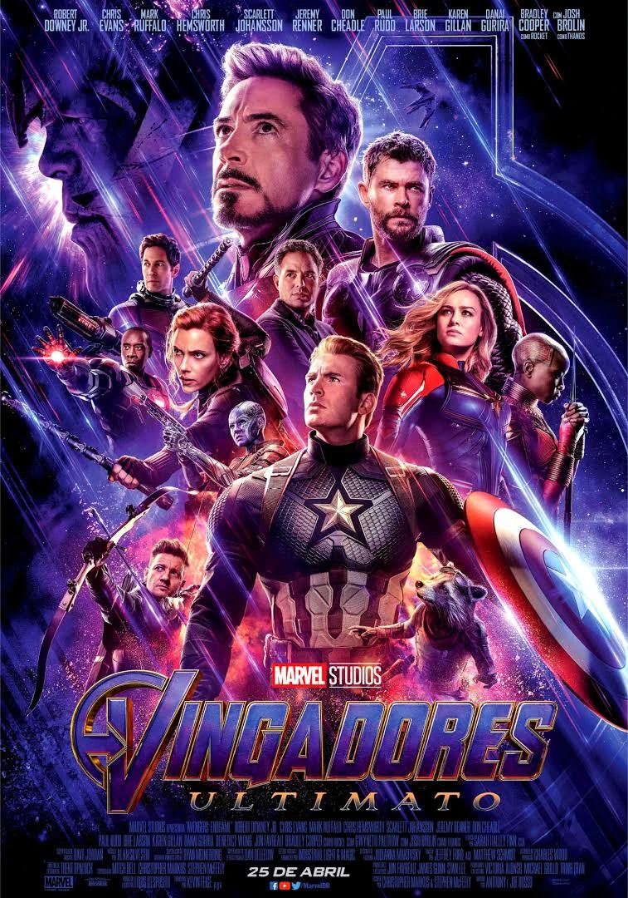

A cinco passos de você

conta a história de Stella Grant e Will Newman, dois adolescentes com fibrose cística que se apaixonam em um hospital.
Para todos garotos que ja amei

Para Todos os Garotos que Já Amei conta a história de Lara Jean Song Covey, uma adolescente romântica e tímida de 16 anos que guarda cartas de amor escritas para cada um dos cinco garotos por quem já se apaixonou.
Vingadores

Os Vingadores (2012) acompanha a união de heróis icônicos convocados por Nick Fury.
Homem-Aranha

Homem-Aranha: Um Novo Dia explora a vida de Peter Parker após os acontecimentos de Homem-Aranha: Sem Volta Para Casa. Vivendo em Nova York depois que sua identidade foi apagada da memória de todos, o amigão da vizinhança tenta seguir em frente anonimamente enquanto concilia a rotina universitária com a missão de proteger a cidade como super-herói. Sem poder contar com seus amigos e obrigado a enfrentar tudo sozinho, Peter busca se reencontrar ao mesmo tempo em que se sente invisível e vê sua namorada vivendo novas experiências. Porém, uma série de acontecimentos coloca a cidade em perigo novamente, fazendo com que ele enfrente vilões cada vez mais poderosos e tome decisões que colocarão à prova seus valores e o verdadeiro significado do sacrifício, mostrando que, de fato, com grandes poderes vêm grandes responsabilidades. Em uma jornada marcada por recomeços, Peter precisará descobrir se é possível adaptar-se à nova realidade sem abrir mão daquilo que faz dele o Homem-Aranha.